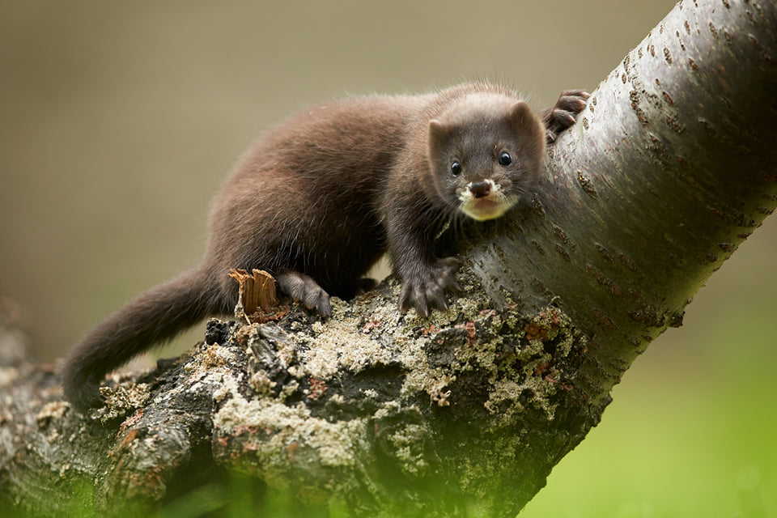
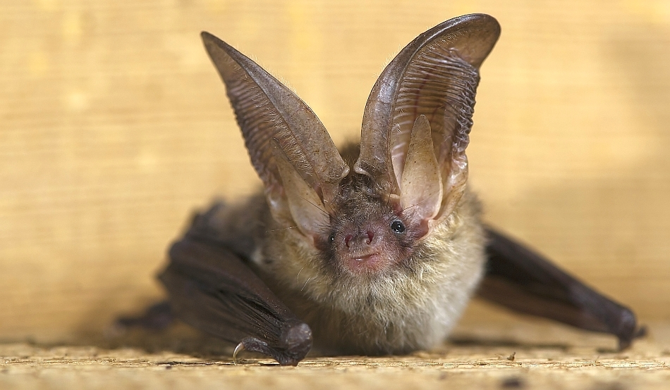
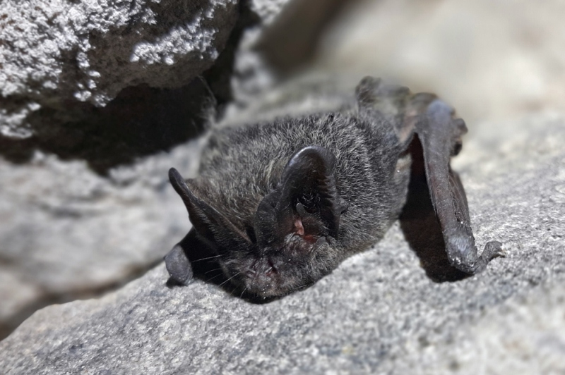

Caracteristici generale
ANIMALELE
1. Nurca europeană
 Nurca europeană este o specie în pericol de dispariţie. Are blana în totalitate maro, cu excepţia buzelor. Se hrăneşte cu vieţuitoare acvatice, dar şi cu păsări şi mamifere mici. Nurcile se împerechează în lunile februarie-martie. Ele formează în Delta Dunării unica populaţie viabilă din lume, fiind estimată la minim 1.130 de exemplare, respectiv maximum 2.280 de exemplare.
Nurca este unul dintre puţinele mamifere care îşi face provizii. Acest proces se întâmplă toamna când adună 10-12 kg de mâncare. Printre duşmanii naturali ai nurcii se numără păsările mari, răpitoare. Uneori nurca e atacată şi de vidră.
Nurca a fost vânată mulţi ani pentru blana sa. Astăzi, vânarea nurcii este interzisă, însă există cazuri de braconaj asupra speciei.
Nurca se află sub protecţia mai multor legi internaţionale şi ocrotită total de legislaţia ginegetică română.
Nurca europeană este o specie în pericol de dispariţie. Are blana în totalitate maro, cu excepţia buzelor. Se hrăneşte cu vieţuitoare acvatice, dar şi cu păsări şi mamifere mici. Nurcile se împerechează în lunile februarie-martie. Ele formează în Delta Dunării unica populaţie viabilă din lume, fiind estimată la minim 1.130 de exemplare, respectiv maximum 2.280 de exemplare.
Nurca este unul dintre puţinele mamifere care îşi face provizii. Acest proces se întâmplă toamna când adună 10-12 kg de mâncare. Printre duşmanii naturali ai nurcii se numără păsările mari, răpitoare. Uneori nurca e atacată şi de vidră.
Nurca a fost vânată mulţi ani pentru blana sa. Astăzi, vânarea nurcii este interzisă, însă există cazuri de braconaj asupra speciei.
Nurca se află sub protecţia mai multor legi internaţionale şi ocrotită total de legislaţia ginegetică română.

2. Vidra
Vidra este un mamifer de talie relativ mare, cu un corp alungit acoperit cu o blană foarte deasă iar coada este lungă şi rotundă. Culoarea blănii variază de la maro închis la bej, cu excepţia gâtului, pieptului şi a părţii ventrale care sunt gri-gălbui. Vidra este un animal predominant nocturn, foarte timid şi dificil de observat, de obicei activ cu circa o oră înainte de amurg
şi până la o oră după ivirea zorilor. Vidra este o specie strict protejată în temeiul legislaţiei internaţionale şi a diferitor convenţii. Vidrele se hrănesc cu peşte, broaşte, crustacei şi alte nevertebrate acvatice, cantitatea de hrană zilnică a unei vidre variind între 15 și 25% din greutatea corporală
a animalului. Vidrele sunt animale cosmopolite, lipsind doar în Australia şi insulele învecinate. Ele vieţuiesc pe litoraluri stâncoase marine, pe lângă apele curgătoare şi stătătoare, fiind înotătoare excelente. Ele ating pe uscat o viteză de 29 km/h.
3. Liliacul cârn
Liliacul cârn are blană aproape neagră cu nuanţe de gri şi maroniu, aripile lungi şi înguste. Se hrăneşte cu insecte şi dăunătorii agricoli. La noi apare destul de rar în zona p&3259durilor subcarpatice, a fost semnalat în unele peşteri din Oltenia şi Transilvania. Zboară destul de iute pe deasupra grădinilor. Primăvara şi vara apare timpuriu, chiar pe timp de furtună şi ploaie.
Trăieşte mai mult izolat. În cele mai multe ţări din Europa, specia este considerată rară şi periclitată. Rapoartele oficiale recente indică, în mod eronat, un număr maxim de 4.500 de exemplare la nivel de România.Liliecii din ţara noastră se hrănesc numai cu insecte. Pentru că iarna nu găsesc insecte, aceştia sunt nevoiţi ori să migreze spre zone mai calde, ori să hiberneze pentru a putea supravieţui iernii.
